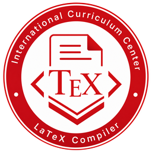

本地优先
源码、编译和 PDF 默认留在自己的电脑里。DOI 或 arXiv 查询必须由你主动触发。

ICSTeX GitHub产品理念
ICSTeX 是一个面向 ICC 学生的本地 LaTeX 写作工作台。它不取代 LaTeX，而是试着让开始、编译和排错少一点负担。
一段说明
我是徐铭华，来自 S3C1，也是一名正在经历 IA、EE、实验报告和 Academic Essay 的 IB 学生。和很多 ICC 同学一样，我开始越来越频繁地接触 LaTeX，也越来越清楚地感受到：它很强大，但从环境配置、语法学习到编译调试，对于习惯 Microsoft Office 的同学来说并不轻松。
ICSTeX 就诞生于这个问题。它并不是为了取代 LaTeX、Overleaf 或其他成熟工具，而是想做一个更适合 ICC Students 的本地写作工作台：保留 LaTeX 的能力，同时尽可能减少配置、操作和调试带来的负担，让更多时间真正回到研究、思考与写作本身。
这是我的第一个正式软件项目，它一定还有很多不成熟的地方。但如果 ICSTeX 能在某个赶论文的深夜替你省下一点时间，在某次编译失败时少带来一点烦恼，那么它就已经实现了最初的意义。
三个原则
源码、编译和 PDF 默认留在自己的电脑里。DOI 或 arXiv 查询必须由你主动触发。
状态、错误和限制用学生能读懂的话说明；遇到问题时给出下一步，而不是只显示内部术语。
LaTeX 源码仍然是可复制、可检查的事实来源。可视化功能应帮助编辑，而不是把项目锁进专有格式。
公开信
我叫徐铭华，来自 S3C1，是一名 IB 学生。
和许多 ICC 同学一样，我们每天都要面对大量学术写作任务：IA、EE、实验报告、Academic Essay……而出于格式规范与学术要求，LaTeX 已逐渐成为许多课程和项目的重要工具。
然而，对于习惯了 Microsoft Office 生态的同学而言，LaTeX 的学习曲线并不平缓。从环境配置、语法学习到编译调试，往往需要投入大量额外时间。现有解决方案虽然各有优势，但也存在一定局限性。
例如，Overleaf 拥有优秀的在线协作体验和简洁的界面，但必须依赖网络环境，随着项目规模扩大，其免费版本的限制也会逐渐显现。而部分本地编译器虽然提供了完整的离线能力，却因年代久远，在界面设计和交互体验上难以满足现代用户的需求。
于是，一个想法逐渐在我脑海中形成：能否开发一款兼具现代化体验与本地编译能力的 LaTeX 工具？
今年，在 Codex 与 Claude Code 等 AI 工具的帮助下，这个想法终于从草稿变成了现实——ICSTeX 诞生了。
ICSTeX 并不是为了取代现有的 LaTeX 生态，而是希望为 ICC Students 提供一种更加轻松、友好的使用方式，让大家能够把更多时间投入到研究、思考与创作本身，而不是被繁琐的配置与调试过程所困扰。
作为我的第一个正式软件项目，它一定还存在许多不足和 Bug。但我真诚地希望，它能够在某个深夜赶论文的时刻，为你节省一点时间；在某次反复编译失败的时候，为你减少一点烦恼。
如果它真的做到了这些，那么 ICSTeX 就已经实现了它最初的意义与使命。
徐铭华 敬上
继续了解
想知道每个功能怎么用，可以先看操作指南；准备安装时，回到下载区选择对应平台。